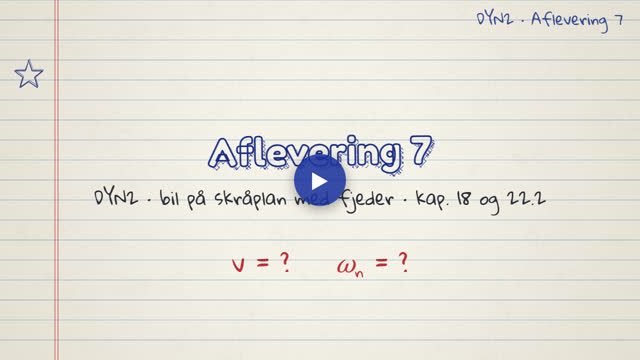
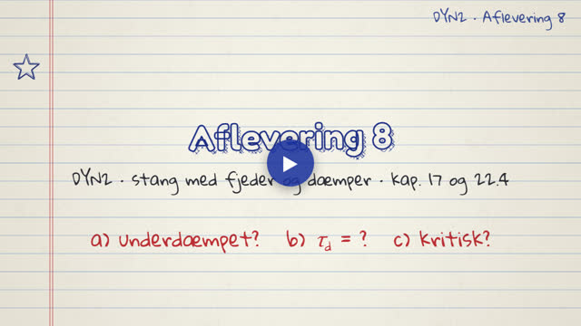
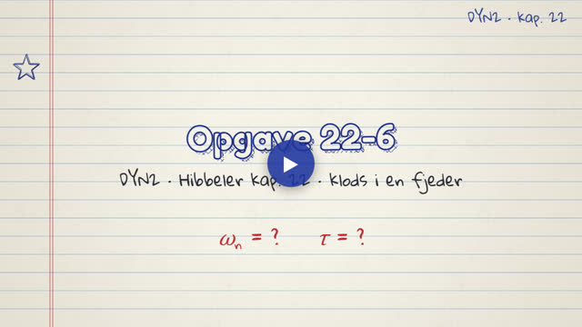
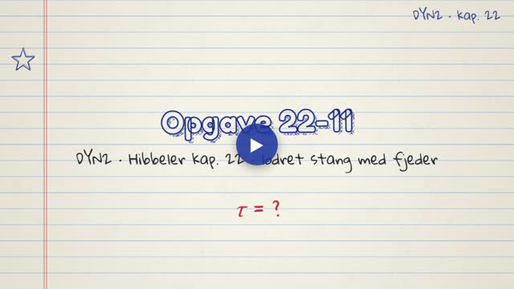
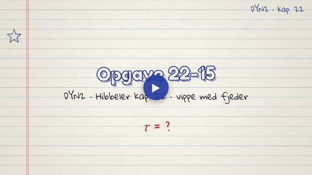
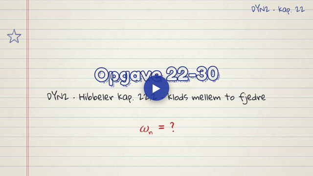
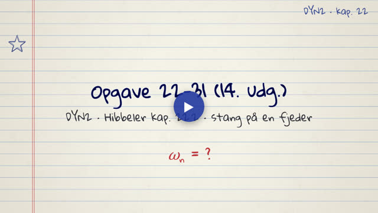
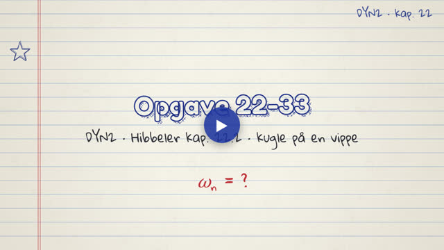
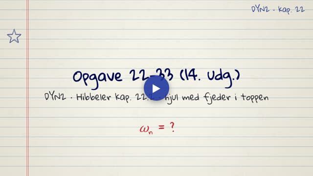
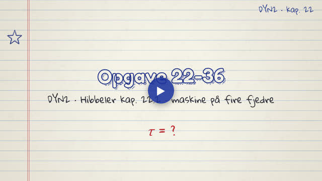

DYN2 · Vibrationer. Videoerne tegnes live i din browser og fylder næsten ingenting.
Ét begreb pr. video, i slidernes rækkefølge.
Eksempler og eksamensopgaver fra kapitlet, trin for trin.

Aflevering 7 del 1, grundig gennemgang: bil på skråplan med fjeder. Energibevarelse med m_eq = 16 kg giver v = 0,739 m/s; energimetoden med kæderegel og nulregel giver ωn = 5,59 rad/s.

Aflevering 8, grundig gennemgang: stang med fjeder og dæmper. Parallelakse-sætning, buelængde r·θ, momentligning; ζ = 1/3 (underdæmpet), τd = 0,666 s, kritisk dæmpning ved 0,346 m.

Opgave 22-6: klods i fjeder. k fra den statiske udstrækning, ωn = 49,5 rad/s og τ = 0,127 s. Med graf af perioden og m mod 4m.

Opgave 22-11: lodret stang med fjeder i bunden. Momenter om A giver ωn² = 3k/m + 3g/(2L).

Opgave 22-15: vippe med fjeder. G ligger i drejepunktet, og τ = 2π·√(m/(3k)).

Opgave 22-30: klods mellem to fjedre. Energimetoden giver k_eq = 2k og ωn = 18,26 rad/s. Med plot af T, V og E over tiden.

Opgave 22-31 (14. udg.): vandret stang på en fjeder. Forspændingen ophæver tyngden, og ωn = √(3k/m).

Opgave 22-33: kugle på en vippe. Fjederen er forspændt 58,8 mm, og ωn = 12,91 rad/s. Med plot af, hvorfor tyngden forsvinder.

Opgave 22-33 (14. udg.): hjul med fjeder i toppen. Energi om IC, toppen flytter 2rθ, og ωn = 8,12 rad/s.

Opgave 22-36: maskine på fire fjedre. τ = π·√(m/k), plus de andre svingningsformer (vipning, sidebevægelse, torsion).